进程和内存管理 内核功能：进程管理、内存管理、文件系统、网络功能、驱动程序、安全功能等。
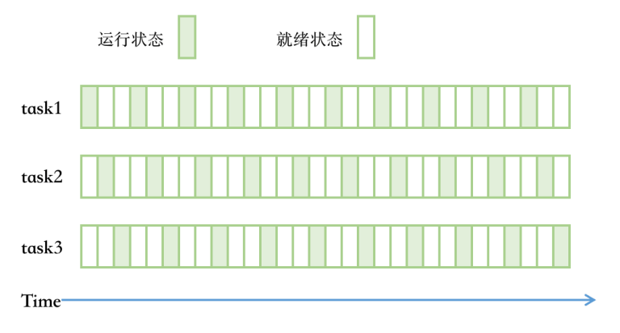
什么是进程 进程是运行中的程序
Process: 运行中的程序的一个副本，是被载入内存的一个指令集合，是资源分配的单位
进程 ID (Process ID, PID) 号码被用来标记各个进程
UID, GID, 和 SELinux 上下决定对文件系统的存取和访问权限
通常从执行进程的用户来继承
存在生命周期
进程创建:
init: 第一个进程，从 CentOS7 以后为 systemd
进程都由其父进程创建，fork(), 父子关系，CoW: Copy On Write
每个进程都有自己的资源，由操作系统分配，内存，栈，文件描述符
进程，线程
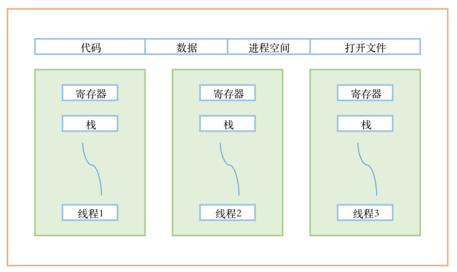
进程
进程是一个具有一定独立功能的程序在一个数据集上的一次动态执行的过程，是操作系统进行资源分配和调度的一个独立单位，是应用程序运行的载体。进程是一种抽象的概念，从来没有统一的标准定义。
进程的组成
进程一般由程序、数据集合和进程控制块三部分组成。
程序用于描述进程要完成的功能，是控制进程执行的指令集；
进程具有的特征：
动态性：进程是程序的一次执行过程，是临时的，有生命期的，是动态产生，动态消亡的；
并发性：任何进程都可以同其他进程一起并发执行；
独立性：进程是系统进行资源分配和调度的一个独立单位；
结构性：进程由程序、数据和进程控制块三部分组成。
线程
在早期的操作系统中并没有线程的概念，进程是能拥有资源和独立运行的最小单位，也是程序执行的最小单位。任务调度采用的是时间片轮转的抢占式调度方式，而进程是任务调度的最小单位，每个进程有各自独立的一块内存，使得各个进程之间内存地址相互隔离。
后来，随着计算机的发展，对CPU的要求越来越高，进程之间的切换开销较大，已经无法满足越来越复杂的程序的要求了。于是就发明了线程。
线程是程序执行中一个单一的顺序控制流程，是程序执行流的最小单元，是处理器调度和分派的基本单位。一个进程可以有一个或多个线程，各个线程之间共享程序的内存空间（也就是所在进程的内存空间）。一个标准的线程由线程ID、当前指令指针（PC）、寄存器和堆栈组成。而进程由内存空间（代码、数据、进程空间、打开的文件）和一个或多个线程组成。
进程与线程的区别
进程是操作系统分配资源的最小单位
进程是程序执行的CPU调用的最小单位
线程是程序执行的CPU调度的最小单位
一个进程由一个或多个线程组成，线程是一个进程中代码的不同执行路线；
进程之间相互独立，但同一进程下的各个线程之间共享程序的内存储空间（包括代码段、数据集、堆等）及一些进程级的资源（如打开文件和信号），某进程内的线程在其它进程不可见； 调度和切换：线程上下文切换比进程上下文切换要快得多。
面试题：查看进程中的线程
1 grep -i threads /proc/PID/status
查看进程的二进制文件
查看进程打开的文件
并行和并发
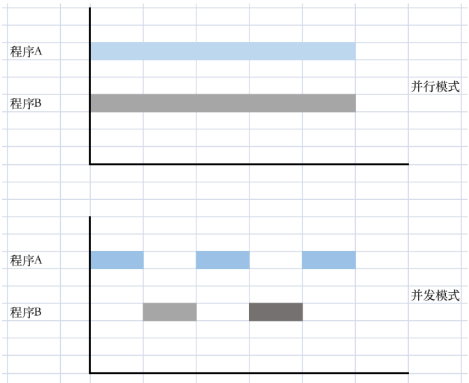
进程结构 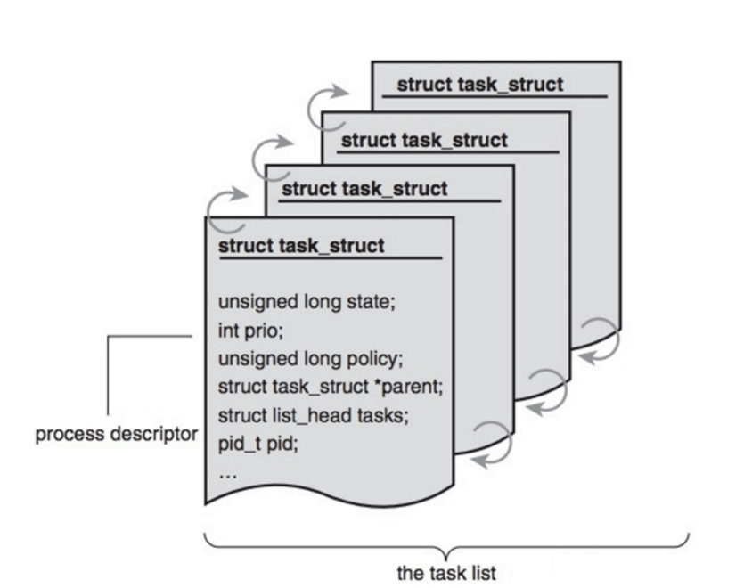
内核把进程存放在叫做任务队列(task list)的双向循环链表中。
链表中的每一项都是类型为task_struct，称为进程控制块(Processing Control Control Block)，PCB中包含一个具体进程的所有信息。
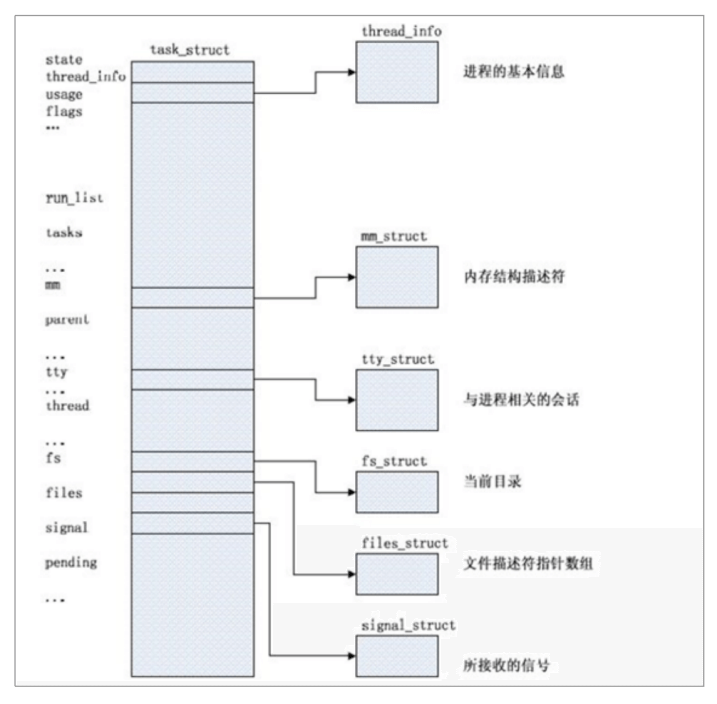
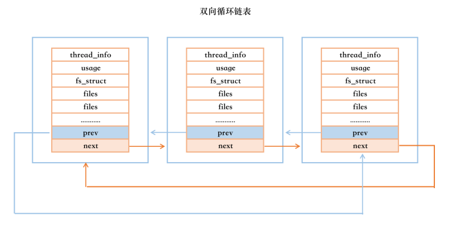
进程控制块 PCB 包含信息：
进程 id、用户 id 和组 id
程序计数器
进程的状态（有就绪、运行、阻塞）
进程切换时需要保存和恢复的 CPU 寄存器的值
描述虚拟地址空间的信息
描述控制终端的信息
当前工作目录
当前文件描述符表，包含很多指向 file 结构体的指针
文件描述符表，包含很多 ulimit -a 的指针
进程可以使用的资源上限（ulimit -a 命令可以查看）
输入输出状态：配置进程使用 I/O 设备
进程相关概念 Page Frame: 页框，用于存储页面数据，存储Page 4k
1 2 3 4 5 6 7 8 9 10 11 12 13 14 15 16 17 18 19 20 21 [root@rocky8 ~] PAGESIZE 4096 PAGE_SIZE 4096 SSIZE_MAX 32767 _POSIX_SSIZE_MAX 32767 _POSIX_THREAD_ATTR_STACKSIZE 200809 FILESIZEBITS 64 POSIX_ALLOC_SIZE_MIN 4096 POSIX_REC_INCR_XFER_SIZE POSIX_REC_MAX_XFER_SIZE POSIX_REC_MIN_XFER_SIZE 4096 LEVEL1_ICACHE_SIZE 32768 LEVEL1_ICACHE_LINESIZE 64 LEVEL1_DCACHE_SIZE 32768 LEVEL1_DCACHE_LINESIZE 64 LEVEL2_CACHE_SIZE 524288 LEVEL2_CACHE_LINESIZE 64 LEVEL3_CACHE_SIZE 4194304 LEVEL3_CACHE_LINESIZE 64 LEVEL4_CACHE_SIZE 0 LEVEL4_CACHE_LINESIZE 0
物理地址空间和虚拟地址空间 MMU：Memory Management Unit 负责虚拟地址转换为物理地址
程序在访问一个内存地址指向的内存时，CPU 不是直接把这个地址送到内存总线上，而是被送到 MMU （Memory Management Unit），然后把内存地址映射到实际的物理内存地址上，然后通过总线再去访问内存，程序操作的地址称为虚拟内存地址。
TLB：Translation Lookaside Buffer 翻译后备缓冲区，用于保存虚拟地址和物理地址映射关系的缓存。
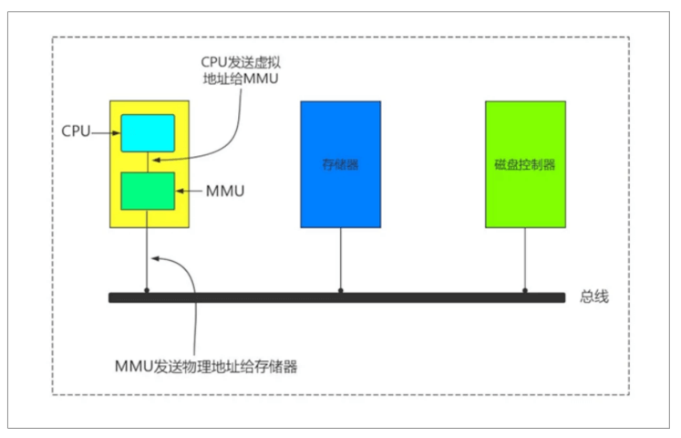
用户和内核空间 内存有一部份分配给内核使用，一部份分配给应用程序使用，分别称为内核空间和用户空间；
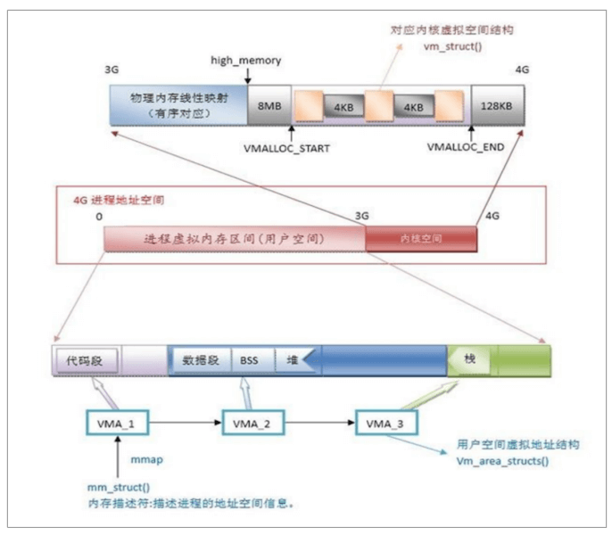
c代码和内存布局之间的对应关系 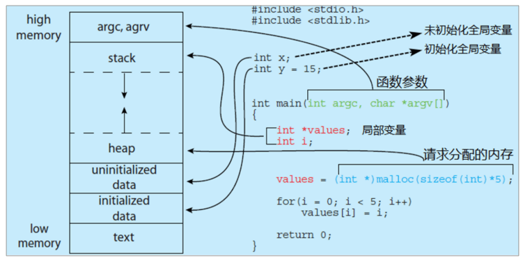
1 2 3 4 5 6 7 8 9 10 11 12 13 14 15 16 17 #include <stdio.h> #include <stdlib.h> int x;int y=15 ;int main (int argc,char *argv[]) { int *values; int i; values=(int *)malloc (sizeof (int )*5 ); for (i=0 ;i<5 ;i++){ values[i]=i; } return 0 ; }
每个进程都包括5种不同的数据段：
代码段：用来存放可执行文件的操作指令，即它是可执行程序在内存中的镜像。代码段需要防止在运行时被非法修改，所以只准许读取操作，而不允许写入（修改）操作——它是不可写的。
数据段：用来存放可执行文件中已初始化全局变量，换句话说就是存放程序静态分配的变量和全局变量。
BSS段：Block Started by Symbol”的缩写，意为“以符号开始的块”。BSS包含了程序中未初始化的全局变量，在内存中bss段全部置零。
堆（heap）：存放数组和对象，堆是用于存放进程运行中被动态分配的内存段，它的大小并不固定，可动态扩张或缩减。当进程用malloc等函数分配内存时，新分配的内存就被自动添加到堆上（堆被扩张）；当利用free等函数释放内存时，被释放的内存从堆中被剔除（堆被缩减）。
栈（stack）：栈是用来存放程序临时创建的局部变量，也就是说我们函数括号“()”中定义的变量（但不包括static声明的变量，static意味着在数据段中存放变量）。此外以外，在函数被调用时，其参数也会被压入发起调用的进程栈中，并且等到调用结束后，函数的返回值也会被存放回栈中。由于栈的先进先出特点，所以栈特别方便用来保存/恢复调用现场。可以把栈看成一个暂存、交换临时数据的内存区。
喝多了吐就是栈，吃多了拉就是队列
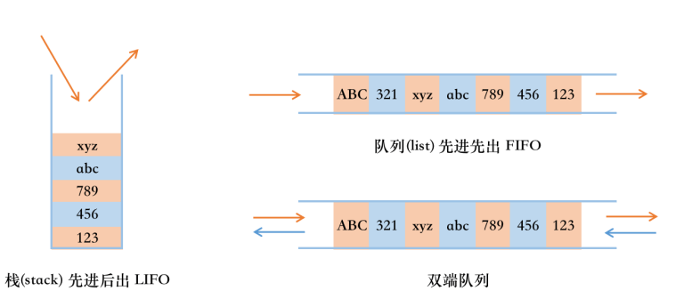
进程使用内存问题 内存泄漏: Memory Leak 指程序中用 malloc 或 new 申请了一块内存，但是没有用 free 或 delete 将内存释放，导致这块内存一直处于占用状态。
内存溢出: Memory Over Overflow 指程序申请了 10M 的空间，但是在这个空间写入 10M 以上字节的数据，就是溢出。
内存不足: OOM 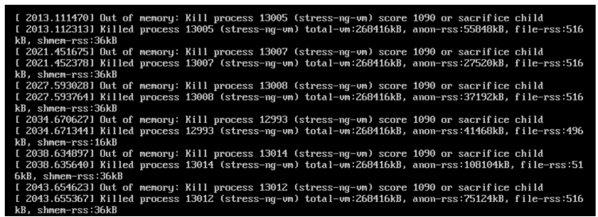
OOM 即 Out Of Memory，“内存用完了”，在情况在 Java 程序中比较常见。系统会选择一个进程将之杀死，在日志 messages 中看到类似下面的提示：
Jul 10 10:20:30 kernel: Out of memory: Kill process 9527 (java) score 88 or sacrifice child
当 JVM 因为没有足够的内存来为对象分配空间并且垃圾回收器也已经没有空间可回收时，就会抛出这个 error，因为这个问题已经严重到不足以被应用处理。
原因：
给应用分配内存太少：比如虚拟机本身可使用的内存（一般通过启动时的 VM 参数指定）太小。
应用用的太多，并且用完没释放，浪费了。此时就会造成内存泄露或者内存溢出。
使用的解决办法：
限制 Java 进程的max heap，并降低 Java 程序的 worker 数量，从而降低内存使用。
给系统增加 swap 空间。
设置内核参数（不推荐），不允许内存申请过量：
1 2 3 echo 2 > /proc/sys/vm/overcommit_memoryecho 80 > /proc/sys/vm/overcommit_ratioecho 2 > /proc/sys/vm/panic_on_oom
说明：
Linux 默认是允许 memory overcommit 的，只要你来申请内存我就给你，寄希望于进程实际上用不到那么多内存，万一用到那么多了呢？
Linux 设计了一个 OOM killer 机制挑选一个进程出来杀死，以腾出部分内存，如果还不够就继续。也可通过设置内核参数 vm.panic_on_oom 使得发生 OOM 时自动重启系统。这都是有风险的机制，重启有可能造成业务中断，杀死进程也有可能导致业务中断。
所以 Linux 2.6之后允许通过内核参数 vm.overcommit_memory 禁止 memory overcommit。
vm.overcommit_memory 接受三种取值：
1 2 3 4 5 0 - Heuristic overcommit handling. 这是缺省值，它允许 overcommit，但对于过于目张胆的 overcommit 会被拒绝，比如 malloc一次性申请的内存大小超过了系统总内存。Heuristic的意思是“试探式的”，内核利用某种算法猜测你的内存请求是否合理，它认为不合理就会拒绝 overcommit。 1 - Always overcommit. 允许 overcommit，对内存申请者来者不拒。内核执行无内存过量使用处理。使用这个设置会增大内存超载的可能性，但也可以增强大量使用内存任务的性能。 2 - Don’t overcommit. 禁止 overcommit。内存拒绝等于或者大于可用 swap 大小以及 overcommit_ratio 指定的物理 RAM 比例的内存请求。如果希望减小内存过度使用的风险，这个设置是最好的。
1 2 3 [root@localhost ~] vm.overcommit_memory = 0
进程状态 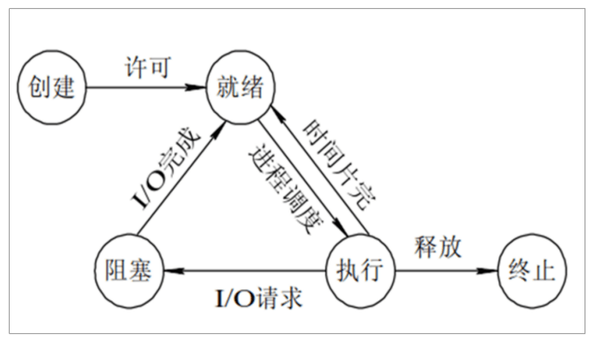
进程的基本状态
创建状态：进程在创建时需要申请一个空白 PCB(process control block 进程控制块), 向其中填写控制和管理进程的信息, 完成资源分配。如果创建工作无法完成, 比如资源无法满足, 就无法被调度运行, 把此时进程所处状态称为创建状态
就绪状态：进程已准备好, 分配到所需资源, 只要分配到 CPU 就能够立即运行
执行状态：进程处于就绪状态被调度后, 进程进入执行状态
阻塞状态：正在执行的进程由于某些事件(I/O 请求, 申请缓存区失败)而暂时无法运行, 进程阻塞。在满足请求时进入就绪状态等待系统调用
终止状态：进程结束, 或出现错误事件或被系统终止, 进入终止状态。无法再执行
1 2 3 4 5 6 7 8 [root@localhost ~] USER PID %CPU %MEM VSZ RSS TTY STAT START TIME COMMAND root 1 0.0 1.3 183880 10688 ? Ss May26 0:07 /usr/lib/systemd/systemd --switched-root root 2 0.0 0.0 0 0 ? S May26 0:00 [kthreadd] root 3 0.0 0.0 0 0 ? I< May26 0:00 [rcu_gp] root 4 0.0 0.0 0 0 ? I< May26 0:00 [rcu_par_gp]
状态之间转换六种情况
运行——>就绪：1，主要是进程占用CPU的时间过长，而系统分配给该进程占用CPU的时间是有限的；2，在采用抢占式优先级调度算法的系统中，当有更高优先级的进程要运行时，该进程被迫让出CPU，该进程便由执行状态转变为就绪状态
就绪——>运行：运行的进程的时间片用完，调度转到就绪队列中选择合适的进程分配CPU
运行——>阻塞：正在执行的进程因发生某等待事件而无法执行，则进由执行状态变为阻塞状态，如发生了I/O请求
阻塞——>就绪：进程所等待的事件已经发生，就进入就绪队列
以下两种状态是不可能发生的：
阻塞——>运行：即使给阻塞进程分配CPU，也无法执行，操作系统在进行调度时不会从阻塞队列进行挑选，而是从就绪队列选取
就绪——>阻塞：就绪态根本就没有执行，谈不上进入阻塞态
进程更多的状态：
运行态：running
就绪态：ready
睡眠态：分为两种，可中断：interruptable，不可中断：uninterruptable
停止态：stopped，暂停于内存，但不会被调度，除非手动启动
僵死态：zombie，僵尸态，结束进程，父进程结束前，子进程不关闭，杀死父进程可以关闭僵死态的子进程
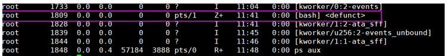
僵尸进程
进程终止，父进程尚未回收，子进程残留资源(PCB)存放于内核中，变成僵尸(zombie)进程。
这样就会导致 如果进程不调用wait()或waitpid()的话，那么保留的那段信息就不会释放，其进程号就会一直被占用，但系统所能使用的进程号是有限的，如果大量产生僵尸进程，将因为没有可用进程号而导致系统不能产生新的进程，此即为僵尸进程的危害。
制造僵尸进程
1 2 3 4 5 6 7 8 9 10 11 12 13 14 15 16 17 18 19 20 21 22 23 [root@rocky8 ~] [root@rocky8 ~] 15946 [root@rocky8 ~] 2830 [root@rocky8 ~] [root@rocky8 ~] [root@rocky8 ~] root 15946 0.0 0.0 0 0 pts/0 Z+ 15:18 0:00 [bash] <defunct> [root@rocky8 ~] [root@rocky8 ~] [root@rocky8 ~]
孤儿进程
如果在子进程退出前，父进程先退出，这时子进程将成为孤儿进程，因为它的父进程已经死了。孤儿进程会被PID=1的systemd进程收养，成为systemd的子进程。注意，孤儿进程还会继续运行，而不会随父进程退出而终，只不过其父进程发生了改变。
范例：孤儿进程
1 2 3 4 5 6 7 8 9 10 11 12 13 14 15 16 17 18 19 20 21 22 [root@rocky8 ~] [1] 1388 [root@rocky8 ~] systemd---sshd---sshd---sshd---bash---sleep [root@rocky8 ~] [root@rocky8 ~] [root@rocky8 ~] systemd---sleep [root@rocky8 ~] ping 127.0.0.1 & echo game over &echo [root@rocky8 ~] game over [root@rocky8 ~] systemd---ping
LRU 算法 LRU：Least Recently Used 近期最少使用算法（喜新厌旧），释放内存
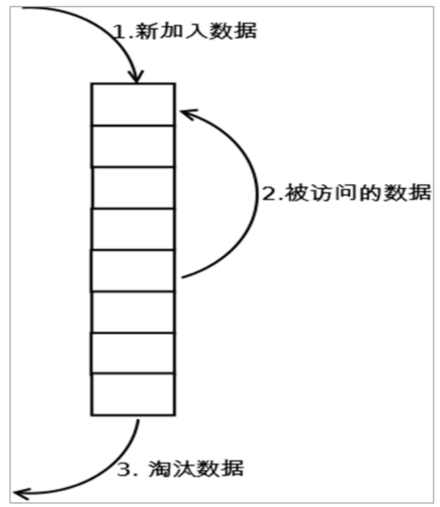
内存淘汰策略，让进程自己能依据某种规则来管理内存空间，保证程序不会因为内存耗尽而无法工作
范例：假设序列为4 3 4 2 3 1 4 2，物理块有3个，则
1 2 3 4 5 6 7 8 第1轮 4调入内存 4 第2轮 3调入内存 3 4 第3轮 4调入内存 4 3 第4轮 2调入内存 2 4 3 第5轮 3调入内存 3 2 4 第6轮 1调入内存 1 3 2 第7轮 4调入内存 4 1 3 第8轮 2调入内存 2 4 1
IPC进程间通信 IPC：Inter Process Communication
1 2 3 4 5 6 7 pipe 管道,单向传输 socket 套接字文件,双工通信 Memory-mapped file 文件映射,将文件中的一段数据映射到物理内存,多个进程共享这片内存 shm shared memory 共享内存 signal 信号 Lock 对资源上锁,如果资源已被某进程住,则其它进程想修改甚至读取这些资源,都将被阳塞,直到锁被打开 semaphore 信号量,一种计数器，停车位
1 2 RPC remote procedure call MQ 消息队列，生产者和消费者，如：Kafka，RabbitMQ，ActiveMQ
范例：利用管道文件实现IPC
1 2 3 4 5 6 7 8 9 10 [root@centos ~] [root@centos ~] prw-r--r-- 1 root root 0 May 6 14:22 /data/test.fifo [root@centos ~] magedu [root@centos ~] magedu
范例：查找socket文件
进程优先级
linux2.6内核将任务优先级进行了一个划分，实时优先级范围是0到MAX_RT_PRIO-1（即99），而普通进程的静态优先级范围从MAX_RT_PRIO到MAX_PRIO-1（即100到139）、
优先级范围
描述
0–99
实时进程
100–139
非实时进程
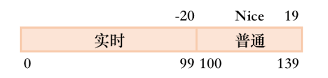
CentOS 优先级
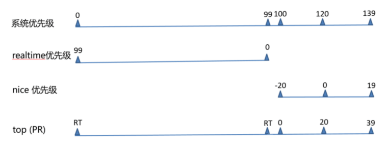
进程优先级
1 2 3 系统优先级：0—139，数字越小，优先级越高，各有140个运行队列和过期队列 实时优先级：99—0，值越大优先级越高 nice值：-20到19，对应系统优先级100—139或
查看nice值
1 2 3 4 5 6 7 8 9 [root@localhost ~] PID CMD NI 1 /usr/lib/systemd/systemd -- 0 2 [kthreadd] 0 3 [rcu_gp] -20 4 [rcu_par_gp] -20 13 [rcu_sched] 0 14 [migration/0] - 15 [watchdog/0] -
用top 查看
1 2 3 4 5 6 7 8 9 [root@localhost ~] PID USER PR NI VIRT RES SHR S %CPU %MEM TIME+ COMMAND 998 root 20 0 704224 30340 15968 S 0.7 1.7 1:18.01 tuned 955 root 20 0 651820 12036 10016 S 0.3 0.7 0:50.21 vmtoolsd 18086 root 20 0 275324 5092 4184 R 0.3 0.3 0:00.06 top 1 root 20 0 189364 11108 8180 S 0.0 0.6 0:02.83 systemd 2 root 20 0 0 0 0 S 0.0 0.0 0:00.02 kthreadd 3 root 0 -20 0 0 0 I 0.0 0.0 0:00.00 rcu_gp 4 root 0 -20 0 0 0 I 0.0 0.0 0:00.00 rcu_par_gp
优先级越高，并不代表程序执行会更快，而是说在cpu调度时，给予更高的权重，最先执行
优先级决定的是执行顺序靠前，而不决定其程序本身要执行多久
修改进程优先级
1 2 3 4 5 6 7 8 9 [root@localhost ~] 3734 (process ID) old priority 0, new priority -10 [root@localhost ~] 3734 ping www.baidu.com -10 [root@localhost ~] 3734 (process ID) old priority 0, new priority -20
发起进程时直接指定优先级
1 2 3 4 [root@localhost ~] [root@localhost ~] 3887 ping www.baidu.com 11
如果要设定某个程序的优先级，在启动时就直接指定，因为每次启动之后，PID的值都是不一样的
进程分类 操作系统分类：
协作式多任务：早期 windows 系统使用，即一个任务得到了 CPU 时间，除非它自己放弃使用 CPU ，否则将完全霸占 CPU ，所以任务之间需要协作——使用一段时间的 CPU 主动放弃使用
抢占式多任务：Linux 内核，CPU 的总控制权在操作系统手中，操作系统会轮流询问每一个任务是否需要使用 CPU ，需要使用的话就让它用，不过在一定时间后，操作系统会剥夺当前任务的 CPU 使用权，把它排在询问队列的最后，再去询问下一个任务
进程类型
注意：两者可相互转化
按进程资源使用的分类：
CPU-Bound：CPU 密集型，非交互
IO-Bound：IO 密集型，交互
进程管理和性能相关的工具 参考链接：http://www.brendangregg.com/linuxperf.html
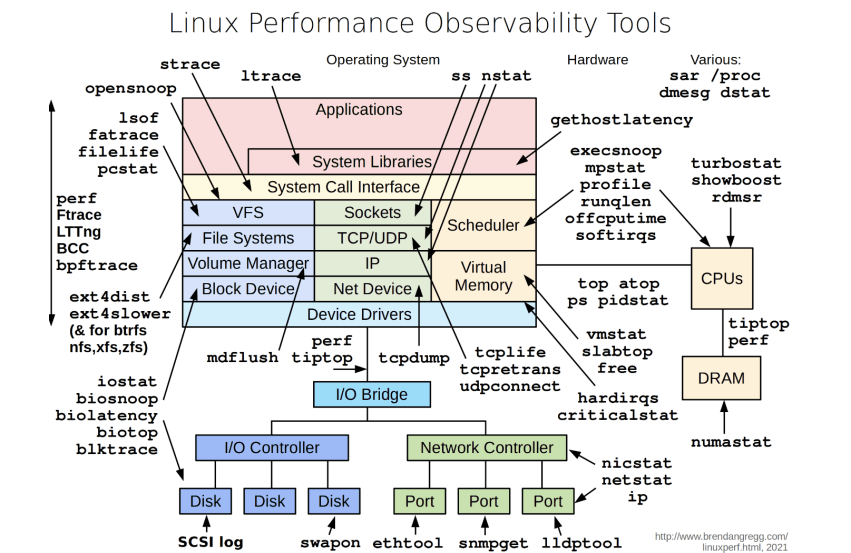
Linux系统状态的查看及管理工具：
1 pstree, ps, pidof, pgrep, top, htop, glance, pmap, vmstat, dstat, kill, pkill, job, bg, fg, nohup
进程树pstree pstree 可以用来显示进程的父子关系，以树结构显示
常用选项：
1 2 3 4 5 6 7 8 9 10 11 12 13 14 15 16 17 18 19 20 pstree [-acglpsStuZ] [ -h | -H PID ] [ -n | -N type ] [ -A | -G | -U ] [ PID | USER ] -a|--arguments -A|--ascii -c|--compact -h|--highlight-al -H PID|--highlight-pid=PID -g|--show-pgids -G|--vt100 -l|--long -n|--numeric-sort -N type |--ns-sort=type -p|--show-pids -s|--show-parents -S|--ns-changes -t|--thread-names -T|--hide-threads -u|--uid-changes -Z|--security-context
范例：
1 2 3 4 5 6 7 8 9 10 11 12 13 14 15 16 17 18 19 20 21 22 23 24 25 26 27 28 29 30 31 32 [root@localhost ~] | `-sshd---sshd---bash---su---bash(jose)---passwd(root) [root@localhost ~] bash───passwd [root@localhost ~] passwd [root@localhost ~] passwd(11916) [root@localhost ~] systemd(1)───sshd(1146)───sshd(11860)───sshd(11864)───bash(11867)───passwd(11916) [root@localhost ~] |-httpd(1331)-+-httpd(1428) | |-httpd(1435) | |-httpd(1436) | `-httpd(1444) [root@localhost ~] systemd─┬─ModemManager───2*[{ModemManager}] ├─sshd─┬─sshd───sshd───bash │ ├─sshd───sshd───bash───pstree │ └─sshd───sshd───bash───su───bash───passwd
进程信息 ps ps 即 process state，可以进程当前状态的快照，默认显示当前终端的进程，Linux系统各进程的相关信息均保存在/proc/PID目录下的各文件中
ps格式
支持三种选项：
UNIX选项 如： -A -e
GNU选项 如： –help
BSD选项 如： a
常用选项：
1 2 3 4 5 6 7 8 9 10 11 12 13 14 15 16 17 18 19 20 21 a x u f k|--show o L -C cmdlist -L -e -f -F -H -u userlist -U userlist -g gid或groupname -G gid或groupname -p pid -ppid pid -t ttylist -M
ps 输出信息
字段
说明
USER
进程属主
PID
进程ID
PPID
父进程ID
%CPU
CPU使用率
%MEM
内存占用率
VSZ
Virtual memory Size，虚拟内存集，线性内存，虚拟内存
RSS
ReSident Size，常驻内存集，实际占用物理内存
TTY
终端
STAT
进程状态
START
进程开始时间
TIME
累计分配给进程的cpu时长
COMMAND
对应的程序及参数
UID
进程属主
C
cpu利用率，取整
STIME
进程开始时间
CMD
对应程序及参数
ni
nice值
pri
priority优先级
rtprio
实时优先级
psr
processor CPU编号
进程状态字段说明
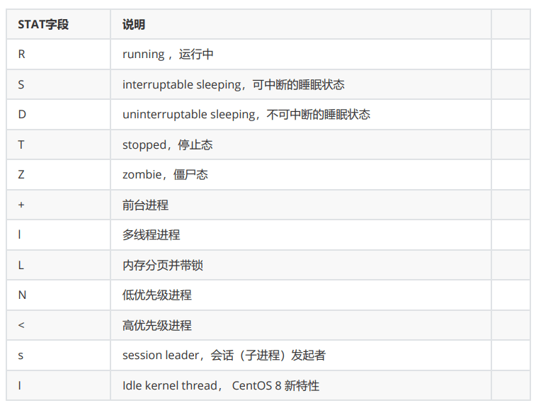
可中断睡眠和不可中断睡眠
1 2 3 4 5 6 7 8 9 10 11 12 13 可中断睡眠态的进程在睡眠状态下等待特定事件发生，即使特定事件没有产生，也可以通过其它手段唤醒该进程，比如，发信号，释放某些资源等。 不可中断睡眠态的进程在也是在睡眠状态下等待特定事件发生，但其只能被特定事件唤醒，发信号或其它方法都无效 发送给不可中断睡眠状态的进程的信号会被丢弃 打个比方 可中断睡眠态的进程和不可中断睡眠态的进程是两位睡美人 不可中断睡眠态的进程只能被王子吻醒 可中断睡眠态的进程可以被王子吻醒，也可以被青蛙吻醒
常用组合：
1 2 3 4 5 6 7 8 9 10 11 12 13 14 15 16 17 18 19 20 21 22 23 24 25 26 27 28 29 30 31 32 33 34 35 36 37 38 39 40 41 42 43 44 45 46 47 48 49 50 51 52 53 54 55 56 57 58 59 60 61 62 63 64 65 66 67 68 69 70 71 72 73 74 75 76 77 78 79 80 81 82 83 84 85 86 87 88 ps aux ps -ef ps -eFH ps -eo pid,tid,class,rtprio,ni,pri,psr,pcpu,stat ,comm ps -axo stat ,euid,ruid,tty ,tpgid,sess,pgrp,ppid,pid,pcpu,comm ps -x ps -fU apache ps -fU 48 ps -fu wang ps -fu 1000 ps -U root -u root ps -fG nginx ps -fg mysql ps -fg 27 ps -fp 1234 ps -f --ppid 1234 ps -fp 1204,1239,1263 ps -ft pts/0 ps -e --forest ps -f --forest -C sshd ps -ef --forest | grep -v grep | grep sshd ps -fL -C nginx ps L ps -eo pid,ppid,user,cmd ps -p 1234 -o pid,ppid,fgroup,ni,lstart,etime ps -p 1244 -o comm = ps -C sshd,bash ps -C httpd,sshd -o pid= ps -eo comm ,etime,user | grep nginx ps -eo pid,ppid,cmd,%mem,%cpu --sort =-%mem | head ps -eo pid,ppid,cmd,%mem,%cpu --sort =-%cpu | head ps -eM ps --context ps -eo euser,ruser,suser,fuser,f,comm ,label watch -n 1 'ps -eo pid,ppid,cmd,%mem,%cpu --sort=-%mem | head'
范例：默认只显示当前终端进程
1 2 3 4 [root@localhost ~] PID TTY TIME CMD 5596 pts/0 00:00:00 bash 6631 pts/0 00:00:00 ps
范例：查看进程详细信息
1 2 3 4 5 6 7 8 9 10 11 12 13 14 [root@rocky8 ~] UID PID PPID C STIME TTY TIME CMD root 1 0 6 15:06 ? 00:00:01 /usr/lib/systemd/systemd --s root 2 0 0 15:06 ? 00:00:00 [kthreadd] root 3 2 0 15:06 ? 00:00:00 [rcu_gp] root 4 2 0 15:06 ? 00:00:00 [rcu_par_gp] [root@rocky8 ~] USER PID %CPU %MEM VSZ RSS TTY STAT START TIME COMMAND root 1 4.0 0.7 175064 13504 ? Ss 15:06 0:01 /usr/lib/syst root 2 0.0 0.0 0 0 ? S 15:06 0:00 [kthreadd] root 3 0.0 0.0 0 0 ? I< 15:06 0:00 [rcu_gp]
范例：
1 2 3 4 5 6 7 8 9 10 11 12 13 14 15 16 [root@rocky8 ~] USER PID %CPU %MEM VSZ RSS TTY STAT START TIME COMMAND root 2 0.0 0.0 0 0 ? S 15:06 0:00 [kthreadd] root 3 0.0 0.0 0 0 ? I< 15:06 0:00 \_ [rcu_gp] root 4 0.0 0.0 0 0 ? I< 15:06 0:00 \_ [rcu_par_gp] root 5 0.0 0.0 0 0 ? I< 15:06 0:00 \_ [slub_flushwq] [root@rocky8 ~] PID CMD %MEM %CPU 1 /usr/lib/systemd/systemd -- 0.7 1.2 2 [kthreadd] 0.0 0.0 3 [rcu_gp] 0.0 0.0 4 [rcu_par_gp] 0.0 0.0 5 [slub_flushwq] 0.0 0.0
范例：排序
针对属性排序，CentOS6 以下版本不支持
1 2 3 4 5 6 7 8 9 10 11 12 13 14 15 16 17 18 19 20 21 22 23 24 25 26 root@rocky8 ~] USER PID %CPU %MEM VSZ RSS TTY STAT START TIME COMMAND root 1 0.8 0.7 175064 13504 ? Ss 15:06 0:02 /usr/lib/syst root 864 0.3 1.6 408592 29208 ? Ssl 15:06 0:00 /usr/libexec/ root 835 0.1 0.6 353020 10840 ? Ssl 15:06 0:00 /usr/bin/vmto root 2 0.0 0.0 0 0 ? S 15:06 0:00 [kthreadd] [root@rocky8 ~] PID CMD %CPU %MEM 1 /usr/lib/systemd/systemd -- 0.5 0.7 864 /usr/libexec/platform-pytho 0.3 1.6 2 [kthreadd] 0.0 0.0 [root@rocky8 ~] PID CMD %CPU %MEM 864 /usr/libexec/platform-pytho 0.2 1.6 1809 /usr/lib/polkit-1/polkitd - 0.0 1.2 830 /usr/sbin/NetworkManager -- 0.0 1.0 942 /usr/sbin/httpd -DFOREGROUN 0.0 1.0 943 /usr/sbin/httpd -DFOREGROUN 0.0 0.9 945 /usr/sbin/httpd -DFOREGROUN 0.0 0.9 1 /usr/lib/systemd/systemd -- 0.4 0.7
范例：有效用户和实际用户
1 2 3 4 5 6 [jose@localhost ~]$ passwd Changing password for user jose. Current password: [root@localhost ~] 6512 passwd 0.0 1.0 root root jose 6515 grep --color=auto passwd 0.0 0.1 root root root
查看进程信息 prtstat 可以显示进程信息，来自于 psmisc 包
此命令显的数据，都来自于 /proc/PID/ 目录，此命令加以整理，以格式化形式显示
格式：
1 2 3 prtstat [OPTIONS] PID ... #选项 -r|--raw #信息的原始显示
范例：
1 2 3 4 5 6 7 8 9 10 11 12 13 14 15 16 17 18 19 20 21 22 23 24 25 26 27 28 29 30 31 32 33 34 35 36 37 38 39 40 41 42 43 44 45 46 47 48 49 50 51 52 53 [jose@localhost ~]$ pidof ping 7260 [jose@localhost ~]$ prtstat 7260 Process: ping State: S (sleeping) CPU Process, Group and Session IDs Process ID: 7260 Parent ID: 6925 Group ID: 7260 Session ID: 6925 T Group ID: 7260 Page Faults This Process (minor major): 288 0 Child Processes (minor major): 0 0 CPU Times This Process (user system guest blkio): 0.00 0.01 0.00 0.00 Child processes (user system guest): 0.00 0.00 0.00 Memory Vsize: 271 MB RSS: 5218 kB RSS Limit: 18446744073709 MB Code Start: 0x1 Code Stop: 0x1 Stack Start: 0 Stack Pointer (ESP): 0 Inst Pointer (EIP): 0 Scheduling Policy: normal Nice: 0 RT Priority: 0 (non RT) [jose@localhost ~]$ prtstat -r 7260 pid: 7260 comm : ping state: S ppid: 6925 pgrp: 7260 session: 6925 tty_nr: 34816 tpgid: 7260 flags: 404000 minflt: 288 cminflt: 0 majflt: 0 cmajflt: 0 utime: 0 stime: 1 cutime: 0 cstime: 0 priority: 20 nice : 0 num_threads: 1 itrealvalue: 0 starttime: 2412053 vsize: 271425536 rss: 1274 rsslim: 18446744073709551615 startcode: 1 endcode: 1 startstack: 0 kstkesp: 0 kstkeip: 0 wchan: 0 nswap: 0 cnswap: 0 exit_signal: 17 processor: 0 rt_priority: 0 policy: 0 delayaccr_blkio_ticks: 0 guest_time: 0 cguest_time: 0
设置和调整进程优先级 进程优先级调整
静态优先级：100-139
进程默认启动时 nice 值为0，优先级120
只有跟用户才能降低 nice 值（提高优先性）
nice 命令
以指定的优先级来启动进程
格式：
1 2 3 4 nice [OPTION] [COMMAND [ARG]...]-n|--adjustment=N
范例：设定进程优先级
1 2 3 4 5 6 [root@localhost ~] [root@localhost ~]$ ps axo pid,cmd,nice |grep ping 7981 ping 127.0.0.1 -10 7992 grep --color=auto ping 0
renice 命令
可以调整正在执行中的进程的优先级
格式：
1 renice [-n] priority pid ...
查看
范例：修改进程优先级
1 2 3 4 5 6 7 [root@localhost ~] 7981 (process ID) old priority -10, new priority -20 [root@localhost ~] 7981 ping 127.0.0.1 -20 8082 grep --color=auto ping 0
搜索进程 进程搜索的常用命令：
1 2 3 4 5 ps options | grep 'pattern' pgrep [options] pattern /sbin/pidof PID
pgrep 格式
1 2 3 4 5 6 7 8 9 10 11 12 13 14 15 16 17 18 19 20 pgrep [options] pattern -d|--delimiter <string> specify output delimiter -l|--list-name -a|--list-full -v|--inverse -w|--lightweight -c|--count -f|--full -g|--pgroup <PGID,...> -G|--group <GID,...> -P|--parent <PPID,...> -s|--session <SID,...> -t|--terminal <tty ,...> -u|--euid <ID,...> -U|--uid <ID,...> -x|--exact -F|--pidfile <file>
范例：查找指定终端的进程
1 2 3 4 [root@rocky86 ~] 2785 -bash 2842 su - jose 2843 -bash
范例：发起用户和生效用户
1 2 3 4 5 6 7 8 9 10 11 12 13 14 15 16 [jose@rocky86 ~]$ passwd Changing password for user jose. Current password: [root@rocky86 ~] root 15440 0.0 0.4 331172 8564 pts/1 S+ 22:24 0:00 passwd [root@localhost ~] [root@rocky86 ~] 2843 -bash 15440 passwd
pidof 查看相关命令的进程
格式
1 2 3 4 5 6 pidof [options] [program [...]] -s|--single-shot -x -o|--omit-pid <PID,...>
范例：
1 2 3 4 5 6 7 8 9 10 11 12 13 14 15 16 17 18 19 20 21 22 23 24 25 26 [root@localhost ~] 8274 8023 6925 994 [root@localhost ~] 8274 [root@localhost ~] [root@localhost ~] 8629 [root@localhost ~] root 8629 0.0 0.4 222528 3200 pts/1 S+ 08:53 0:00 /bin/bash ./0528/ping.sh [root@localhost ~] [root@localhost ~] [jose@localhost ~]$ pidof httpd 1444 1436 1435 1428 1331 [jose@localhost ~]$ pidof -o 1444,1435 httpd 1436 1428 1331
负载查询 uptime 范例：
1 2 3 4 5 6 7 8 9 10 11 12 13 [root@rocky86 ~] 08:55:54 up 11:03, 3 users , load average: 0.00, 0.01, 0.00 08:55:54 up 11:03 3 users load average: 0.00, 0.01, 0.00 [root@rocky86 ~] [root@rocky86 ~]
w命令
1 2 3 4 5 6 [root@rocky86 ~] 08:55:55 up 11:03, 3 users , load average: 0.00, 0.01, 0.00 USER TTY FROM LOGIN@ IDLE JCPU PCPU WHAT root pts/0 10.0.0.1 Tue19 10:05m 0.33s 0.33s -bash root pts/1 10.0.0.1 Tue20 10:31m 0.16s 0.12s -bash root pts/2 10.0.0.1 08:40 3.00s 0.03s 0.00s w
系统平均负载：指在特定时间间隔内运行队列中的平均进程数,通常每个CPU内核的当前活动进程数不大于3，那么系统的性能良好。如果每个CPU内核的任务数大于5，那么此主机的性能有严重问题。
如：linux主机是1个双核CPU，当Load Average 为6的时候说明机器已经被充分使用
显示CPU相关统计 mpstat 来自于 sysstat 包
安装：
格式：
1 2 3 4 5 6 mpstat [ options ] [ <interval> [ <count> ] ] -P {cpu_list|ALL} -I {SUM|CPU|SCPU|ALL} -o JSON
范例：
1 2 3 4 5 6 7 8 9 10 11 12 13 14 15 16 17 18 19 20 21 22 23 24 25 26 27 28 29 30 31 [root@rocky86 ~] Linux 4.18.0-372.9.1.el8.x86_64 (rocky86.m51.magedu.com) 08/24/2022 _x86_64_ (2 CPU) 09:13:00 AM CPU %usr %nice %sys %iowait %irq %soft %steal %guest %gnice %idle 09:13:00 AM all 0.73 0.01 0.49 0.35 0.92 0.30 0.00 0.00 0.00 97.19 [root@rocky86 ~] Linux 4.18.0-372.9.1.el8.x86_64 (rocky86.m51.magedu.com) 08/24/2022 _x86_64_ (2 CPU) 09:13:37 AM CPU %usr %nice %sys %iowait %irq %soft %steal %guest %gnice %idle 09:13:37 AM 0 0.75 0.01 0.48 0.00 0.89 0.26 0.00 0.00 0.00 97.61 [root@rocky86 ~] Linux 4.18.0-372.9.1.el8.x86_64 (rocky86.m51.magedu.com) 08/24/2022 _x86_64_ (2 CPU) 05:11:23 PM CPU %usr %nice %sys %iowait %irq %soft %steal %guest %gnice %idle 05:11:23 PM all 0.16 0.00 0.23 0.68 0.22 0.10 0.00 0.00 0.00 98.61 05:11:23 PM 0 0.17 0.00 0.25 0.00 0.22 0.11 0.00 0.00 0.00 99.25 05:11:23 PM 1 0.15 0.01 0.21 1.35 0.23 0.09 0.00 0.00 0.00 97.97
输出字段说明
1 2 3 4 5 6 7 8 9 10 %user %nice %sys %iowait %irq %soft %steal %guest %gnice %idle
查看进程实时状态 top 和 htop top 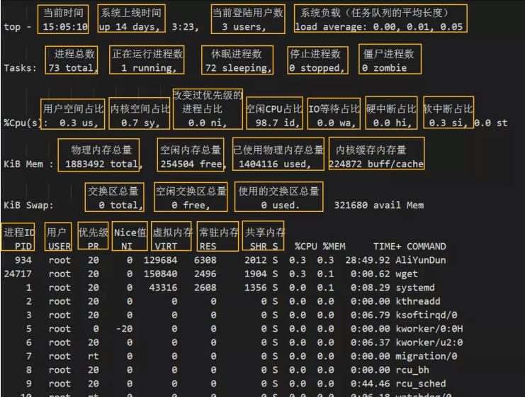
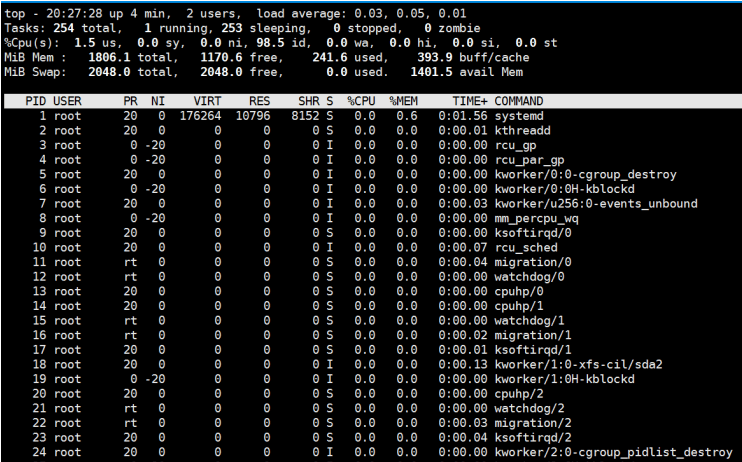
top 提供动态的实时进程状态
有许多内置命令
1 2 3 4 5 6 7 8 9 10 11 12 13 14 15 16 17 帮助：h 或 ？ ，按 q 或esc 退出帮助 排序： P：以占据的CPU百分比,%CPU M：占据内存百分比,%MEM T：累积占据CPU时长,TIME+ 首部信息显示： uptime 信息：l命令tasks及cpu信息：t命令 cpu分别显示：1 (数字) memory信息：m命令 退出命令：q 修改刷新时间间隔：s 终止指定进程：k 保存文件：W
top命令栏位信息简介
1 2 3 4 5 6 7 8 us：用户空间 sy：内核空间 ni：调整nice时间 id：空闲 wa：等待IO时间 hi：硬中断 si：软中断（模式切换） st：虚拟机偷走的时间
top选项：
1 2 3 4 5 6 -c -d -b -n -H -u user
示例：
1 top -H -p `pidof mysqld`
范例:
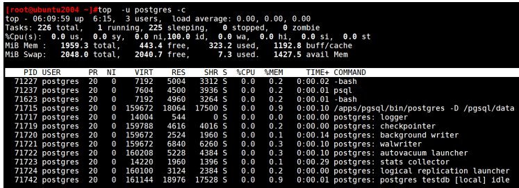
htop 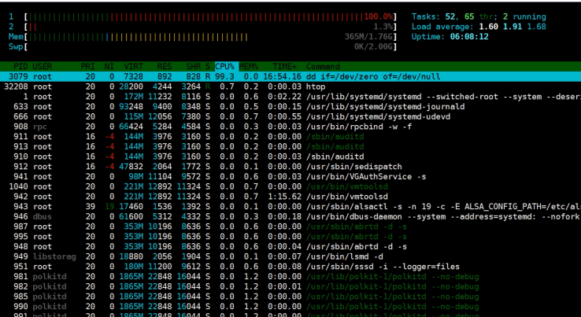
选项：
1 2 3 -d -u UserName: 仅显示指定用户的进程 -s COLUME: 以指定字段进行排序
子命令：
1 2 3 4 s：跟踪选定进程的系统调用 l：显示选定进程打开的文件列表 a：将选定的进程绑定至某指定CPU核心 t：显示进程树
内存空间 free 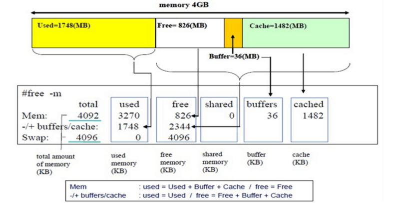
free 可以显示内存空间使用状态
格式：
常用选项：
1 2 3 4 5 6 7 8 -b -m -g -h -o -t -s n -c n
向/proc/sys/vm/drop_caches中写入相应的修改值，会清理缓存。建议先执行sync（sync 命令将所有未写的系统缓冲区写到磁盘中，包含已修改的 i-node、已延迟的块 I/O 和读写映射文件）。执行echo 1、2、3 至/proc/sys/vm/drop_caches, 达到不同的清理目的
如果因为是应用有像内存泄露、溢出的问题时，从swap的使用情况是可以比较快速可以判断的，但通过执行free 反而比较难查看。但核心并不会因为内存泄露等问题并没有快速清空buffer或cache（默认值是0），生产也不应该随便去改变此值。
一般情况下，应用在系统上稳定运行了，free值也会保持在一个稳定值的。当发生内存不足、应用获取不到可用内存、OOM错误等问题时，还是更应该去分析应用方面的原因，否则，清空buffer，强制腾出free的大小，可能只是把问题给暂时屏蔽了。
排除内存不足的情况外，除非是在软件开发阶段，需要临时清掉buffer，以判断应用的内存使用情况；或应用已经不再提供支持，即使应用对内存的时候确实有问题，而且无法避免的情况下，才考虑定时清空buffer。
范例:
1 2 3 4 5 6 7 8 9 10 [root@centos6 ~] total used free shared buffers cached Mem: 1003020 177964 825056 240 16604 59932 -/+ buffers/cache: 101428 901592 Swap: 2097148 0 2097148 root@ubuntu2004:~ total used free shared buff/cache available Mem: 1.9Gi 338Mi 167Mi 1.0Mi 1.4Gi 1.4Gi Swap: 2.0Gi 0B 2.0Gi
说明: man 5 proc
1 2 3 4 5 6 7 8 9 10 11 12 13 14 15 16 17 18 19 [root@centos8 ~] ...... /proc/sys/vm/drop_caches (since Linux 2.6.16) Writing to this file causes the kernel to drop clean caches, dentries, and inodes from memory, causing that memory to become free. This can be useful for memory management testing and performing reproducible filesystem benchmarks.Because writing to this file causes the benefits of caching to be lost, it can degrade overall system performance. To free pagecache, use: echo 1 > /proc/sys/vm/drop_cachesTo free dentries and inodes, use: echo 2 > /proc/sys/vm/drop_cachesTo free pagecache, dentries and inodes, use: echo 3 > /proc/sys/vm/drop_cachesBecause writing to this file is a nondestructive operation and dirty objects are not freeable, the user should run sync (1) first
范例: 清理缓存
1 2 3 4 5 6 7 8 9 10 11 12 13 14 15 16 [root@centos8 ~] 0 [root@centos8 ~] [root@centos8 ~] total used free shared buff/cache available Mem: 1.8Gi 355Mi 724Mi 9.0Mi 726Mi 1.2Gi Swap: 2.0Gi 0B 2.0Gi [root@centos8 ~] [root@centos8 ~] total used free shared buff/cache available Mem: 1.8Gi 320Mi 1.3Gi 9.0Mi 152Mi 1.3Gi Swap: 2.0Gi 0B 2.0Gi
进程对应的内存映射 pmap 格式：
1 pmap [options] pid [...]
常用选项
范例：
另外一种实现
范例:
1 2 3 4 5 6 7 8 9 10 11 12 13 14 15 16 17 18 19 [root@centos8 ~] 33477: ping 127.0.0.1 000055f708aa7000 56K r-x-- ping 000055f708cb5000 4K r---- ping 000055f708cb6000 4K rw--- ping 000055f708cb7000 140K rw--- [ anon ] 000055f70a7cc000 132K rw--- [ anon ] 00007fe73fb13000 2528K r---- LC_COLLATE 00007fe73fd8b000 108K r-x-- libpthread-2.28.so 00007fe73fda6000 2044K ----- libpthread-2.28.so 00007fe73ffa5000 4K r---- libpthread-2.28.so 00007fe73ffa6000 4K rw--- libpthread-2.28.so 00007fe73ffa7000 16K rw--- [ anon ] 00007fe73ffab000 12K r-x-- libdl-2.28.so 00007fe73ffae000 2044K ----- libdl-2.28.so 00007fe7401ad000 4K r---- libdl-2.28.so 00007fe7401ae000 4K rw--- libdl-2.28.so 00007fe7401af000 88K r-x-- libz.so.1.2.11 00007fe7401c5000 2044K ----- libz.so.1.2.11
范例：
1 2 3 4 5 6 7 8 9 10 11 12 13 14 15 16 17 18 19 20 21 22 23 24 [root@centos7 ~] [root@centos7 ~] execve("/usr/bin/ls" , ["ls" ], 0x7ffd4b9dad50 /* 25 vars */) = 0 brk(NULL) = 0x55ed4c7d7000 arch_prctl(0x3001 /* ARCH_??? */, 0x7ffd500ae390) = -1 EINVAL (Invalid argument) access("/etc/ld.so.preload" , R_OK) = -1 ENOENT (No such file or directory) openat(AT_FDCWD, "/etc/ld.so.cache" , O_RDONLY|O_CLOEXEC) = 3 fstat(3, {st_mode=S_IFREG|0644, st_size=73944, ...}) = 0 mmap(NULL, 73944, PROT_READ, MAP_PRIVATE, 3, 0) = 0x7fce5dfa7000 close(3) = 0 [root@centos7 ~] [root@centos7 ~] __libc_start_main(0x402910, 1, 0x7ffcca28b1b8, 0x4129a0 <unfinished ...> strrchr("ls" , '/' ) = nil setlocale(LC_ALL, "" ) = "en_US.utf8" bindtextdomain("coreutils" , "/usr/share/locale" ) = "/usr/share/locale" textdomain("coreutils" )
虚拟内存信息 vmstat 格式：
1 vmstat [options] [delay [count]]
显示项说明：
1 2 3 4 5 6 7 8 9 10 11 12 13 14 15 16 17 18 19 20 21 22 23 procs: r：可运行（正运行或等待运行）进程的个数，和核心数有关 b：处于不可中断睡眠态的进程个数(被阻塞的队列的长度) memory： swpd: 交换内存的使用总量 free： 空闲物理内存总量 buffer：用于buffer的内存总量 cache： 用于cache的内存总量 swap: si：从磁盘交换进内存的数据速率(kb/s) so：从内存交换至磁盘的数据速率(kb/s) io： bi：从块设备读入数据到系统的速率(kb/s) bo: 保存数据至块设备的速率 system： in : interrupts 中断速率，包括时钟 cs: context switch 进程切换速率 cpu： us:Time spent running non-kernel code sy: Time spent running kernel code id : Time spent idle. Linux 2.5.41前,包括IO-wait time. wa: Time spent waiting for IO. 2.5.41前，包括in idle. st: Time stolen from a virtual machine. 2.6.11前, unknown.
选项：
范例：
1 2 3 4 5 6 7 8 9 10 11 12 13 14 15 16 17 18 19 20 21 22 23 24 25 26 27 28 29 30 31 32 33 34 35 36 37 38 39 40 41 42 43 44 45 [root@centos8 ~] procs -----------memory---------- ---swap-- -----io---- -system-- ------cpu----- r b swpd free buff cache si so bi bo in cs us sy id wa st 1 0 0 1125284 5308 404636 0 0 1 1 25 33 0 0 100 0 0 [root@centos8 ~] procs -----------memory---------- ---swap-- -----io---- -system-- ------cpu----- r b swpd free buff cache si so bi bo in cs us sy id wa st 0 0 0 1125408 5308 404676 0 0 1 1 25 33 0 0 100 0 0 0 0 0 1125248 5308 404676 0 0 0 0 165 236 0 0 100 0 0 0 0 0 1125188 5308 404676 0 0 0 0 146 216 0 0 100 0 0 [root@centos8 ~] 1849460 K total memory 314348 K used memory 264424 K active memory 192500 K inactive memory 1125128 K free memory 5308 K buffer memory 404676 K swap cache 2097148 K total swap 0 K used swap 2097148 K free swap 2519 non-nice user cpu ticks 1027 nice user cpu ticks 10178 system cpu ticks 36616214 idle cpu ticks 294 IO-wait cpu ticks 5043 IRQ cpu ticks 5150 softirq cpu ticks 0 stolen cpu ticks 249439 pages paged in 301109 pages paged out 0 pages swapped in 0 pages swapped out 9338473 interrupts 12059933 CPU context switches 1578443646 boot time 19386 forks
统计CPU和设备IO信息 iostat iostat 可以提供更丰富的IO性能状态数据
此工具由sysstat包提供
范例：
1 2 3 4 5 6 7 8 9 10 11 12 13 14 15 16 17 18 19 20 21 22 23 24 25 26 27 28 29 30 31 32 33 34 35 36 37 38 39 40 41 42 43 44 45 [root@centos8 ~] Linux 4.18.0-80.el8.x86_64 (centos8.localdomain) 01/09/2020 _x86_64_ (4 CPU) avg-cpu: %user %nice %system %iowait %steal %idle 0.01 0.00 0.06 0.00 0.00 99.93 Device tps kB_read/s kB_wrtn/s kB_read kB_wrtn sda 0.31 2.57 3.52 238227 326708 scd0 0.01 0.14 0.00 13140 0 [root@centos8 ~] Linux 4.18.0-80.el8.x86_64 (centos8.localdomain) 01/09/2020 _x86_64_ (4 CPU) avg-cpu: %user %nice %system %iowait %steal %idle 0.01 0.00 0.06 0.00 0.00 99.93 Device tps kB_read/s kB_wrtn/s kB_read kB_wrtn sda 0.31 2.57 3.52 238227 326708 scd0 0.01 0.14 0.00 13140 0 avg-cpu: %user %nice %system %iowait %steal %idle 0.00 0.00 0.25 0.00 0.00 99.75 Device tps kB_read/s kB_wrtn/s kB_read kB_wrtn sda 0.00 0.00 0.00 0 0 scd0 0.00 0.00 0.00 0 0 avg-cpu: %user %nice %system %iowait %steal %idle 0.00 0.00 0.00 0.00 0.00 100.00 Device tps kB_read/s kB_wrtn/s kB_read kB_wrtn sda 0.00 0.00 0.00 0 0 scd0 0.00 0.00 0.00 0 0 tps：该设备每秒的传输次数（Indicate the number of transfers per second that were issued to the device.）。"一次传输" 意思是"一次I/O请求" 。多个逻辑请求可能会被合并为"一次I/O请求" 。"一次传输" 请求的大小是未知的。 kB_read/s：每秒从设备（drive expressed）读取的数据量； kB_wrtn/s：每秒向设备（drive expressed）写入的数据量； kB_read：读取的总数据量； kB_wrtn：写入的总数量数据量；这些单位都为Kilobytes。
范例:
1 2 3 4 5 6 7 8 9 10 11 12 13 [root@centos8 ~] Linux 4.18.0-193.el8.x86_64 (centos8.wangxiaochun.com) 11/24/2020 _x86_64_ (2 CPU) 11/24/2020 03:08:50 PM Device tps kB_read/s kB_wrtn/s kB_read kB_wrtn sda 26.51 893.96 310.78 219458 76293 11/24/2020 03:08:51 PM Device tps kB_read/s kB_wrtn/s kB_read kB_wrtn sda 0.00 0.00 0.00 0 0 11/24/2020 03:08:52 PM Device tps kB_read/s kB_wrtn/s kB_read kB_wrtn sda 0.00 0.00 0.00 0 0
范例:
1 2 3 4 5 6 7 8 9 10 11 12 13 14 15 16 17 18 19 20 21 22 23 24 25 26 27 28 29 30 31 [root@rocky ~] Linux 5.14.0-427.13.1.el9_4.x86_64 (rocky) 11/28/24 _x86_64_ (2 CPU) Device r/s rkB/s rrqm/s %rrqm r_await rareq-sz w/s wkB/s wrqm/s %wrqm w_await wareq-sz d/s dkB/s drqm/s %drqm d_await dareq-sz f/s f_await aqu-sz %util nvme0n1 0.14 5.57 0.00 0.09 0.24 38.63 0.06 3.45 0.01 15.03 1.36 53.24 0.00 0.00 0.00 0.00 0.00 0.00 0.00 0.00 0.00 0.01 Device r/s rkB/s rrqm/s %rrqm r_await rareq-sz w/s wkB/s wrqm/s %wrqm w_await wareq-sz d/s dkB/s drqm/s %drqm d_await dareq-sz f/s f_await aqu-sz %util nvme0n1 0.00 0.00 0.00 0.00 0.00 0.00 0.00 0.00 0.00 0.00 0.00 0.00 0.00 0.00 0.00 0.00 0.00 0.00 0.00 0.00 0.00 0.00 Device r/s rkB/s rrqm/s %rrqm r_await rareq-sz w/s wkB/s wrqm/s %wrqm w_await wareq-sz d/s dkB/s drqm/s %drqm d_await dareq-sz f/s f_await aqu-sz %util nvme0n1 0.00 0.00 0.00 0.00 0.00 0.00 0.00 0.00 0.00 0.00 0.00 0.00 0.00 0.00 0.00 0.00 0.00 0.00 0.00 0.00 0.00 0.00 r/s: w/s: rsec/s： wsec/： rKB/s： wKB/s： rrqm/s： wrqm/s： %rrqm: %wrqm: avgrq-sz avgqu-sz await： svctm %util：
监视磁盘I/O iotop 来自于iotop包
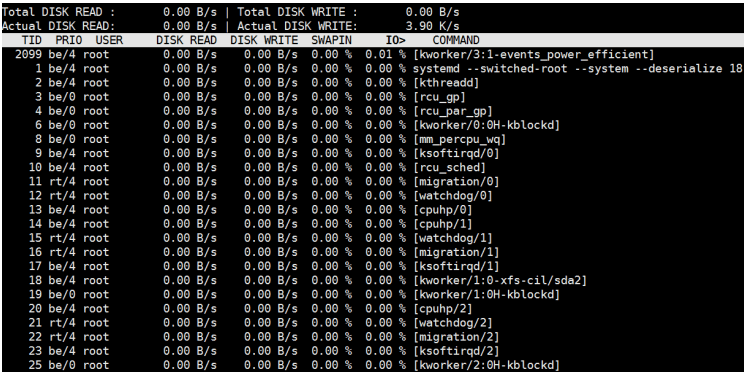
iotop命令是一个用来监视磁盘I/O使用状况的top类工具iotop具有与top相似的UI，其中包括PID、用户、I/O、进程等相关信息，可查看每个进程是如何使用IO
iotop输出
第一行：Read和Write速率总计
第二行：实际的Read和Write速率
第三行：参数如下：
线程ID（按p切换为进程ID）
优先级
用户
磁盘读速率
磁盘写速率
swap交换百分比
IO等待所占的百分比
iotop常用参数
1 2 3 4 5 6 7 8 9 10 11 12 13 14 -o, --only -b, --batch -n NUM, --iter=NUM -d SEC, --delay=SEC -p PID, --pid=PID -u USER, --user=USER -P, --processes -a, --accumulated -k, --kilobytes -t, --time -q, --quiet -q -qq -qqq
交互按键
1 2 3 4 5 6 7 left和right方向键：改变排序 r：反向排序 o：切换至选项--only p：切换至--processes选项 a：切换至--accumulated选项 q：退出 i：改变线程的优先级
显示网络带宽使用情况 iftop 通过EPEL源的 iftop 包
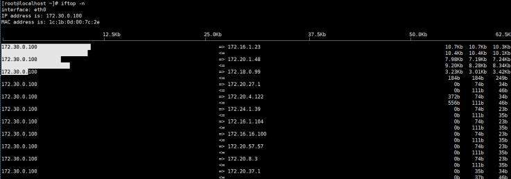
查看网络实时吞吐量 nload 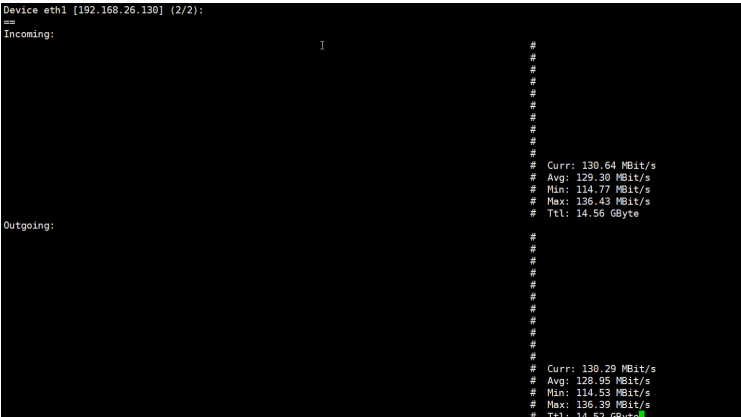
nload 是一个实时监控网络流量和带宽使用情况，以数值和动态图展示进出的流量情况,通过EPEL源安装
界面操作
1 2 3 上下方向键、左右方向键、enter键或者tab键都就可以切换查看多个网卡的流量情况 按 F2 显示选项窗口 按 q 或者 Ctrl+C 退出 nload
范例：
1 2 3 4 5 6 7 8 9 10 11 12 nload nload eth0 eth1 nload -t 500 eth0 nload -u M eth0
查看进程网络带宽的使用情况 nethogs NetHogs是一个开源的命令行工具（类似于Linux的top命令），用来按进程或程序实时统计网络带宽使用率。
github网站: https://github.com/raboof/nethogs/
1 2 3 4 [root@rocky8 ~] [root@ubuntu1804 ~] [root@ubuntu1804 ~]
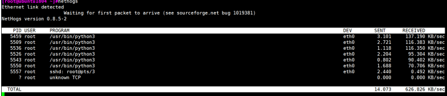
网络监视工具iptraf-ng 来自于iptraf-ng包,可以进网络进行监控,对终端窗口大小有要求.
1 2 3 4 5 6 7 8 9 10 11 12 13 14 15 16 17 18 19 20 21 22 23 24 25 26 27 28 29 30 31 32 33 34 35 36 37 38 39 40 41 42 43 44 45 46 47 48 49 50 [root@centos8 ~] Last metadata expiration check: 0:20:24 ago on Sat 04 Jul 2020 12:17:23 PM CST. Installed Packages Name : iptraf-ng Version : 1.1.4 Release : 18.el8 Architecture : x86_64 Size : 676 k Source : iptraf-ng-1.1.4-18.el8.src.rpm Repository : @System From repo : BaseOS Summary : A console-based network monitoring utility URL : https://github.com/iptraf-ng/iptraf-ng/ License : GPLv2+ Description : IPTraf-ng is a console-based network monitoring utility. IPTraf gathers : data like TCP connection packet and byte counts, interface statistics : and activity indicators, TCP/UDP traffic breakdowns, and LAN station : packet and byte counts. IPTraf-ng features include an IP traffic monitor : which shows TCP flag information, packet and byte counts, ICMP : details, OSPF packet types, and oversized IP packet warnings; : interface statistics showing IP, TCP, UDP, ICMP, non-IP and other IP : packet counts, IP checksum errors, interface activity and packet size : counts; a TCP and UDP service monitor showing counts of incoming and : outgoing packets for common TCP and UDP application ports, a LAN : statistics module that discovers active hosts and displays statistics : about their activity; TCP, UDP and other protocol display filters so : you can view just the traffic you want; logging; support for Ethernet, : FDDI, ISDN, SLIP, PPP, and loopback interfaces; and utilization of the : built-in raw socket interface of the Linux kernel, so it can be used : on a wide variety of supported network cards. [root@centos8 ~] [root@centos8 ~] fatal: This program requires a screen size of at least 80 columns by 24 lines Please resize your window
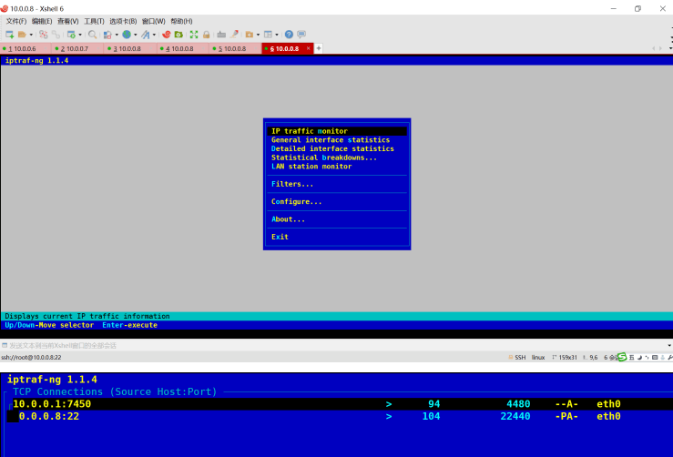
系统资源统计 dstat dstat由pcp-system-tools包提供，但安装dstat包即可, 可用于代替 vmstat,iostat功能
格式：
1 dstat [-afv] [options..] [delay [count]]
常用选项
1 2 3 4 5 6 7 8 9 10 11 12 13 14 15 16 17 18 19 20 -c -C -d -D total,sda,sdb,... -g -m -n -p -r -s --tcp --udp --unix --raw --socket --ipc --top-cpu: --top-io: --top-mem: --top-latency:
范例：
1 2 3 4 5 6 7 8 9 10 [root@centos8 ~] [root@centos8 ~] You did not select any stats, using -cdngy by default. ----total-usage---- -dsk/total- -net/total- ---paging-- ---system-- usr sys idl wai stl| read writ| recv send| in out | int csw 0 0 99 0 0| 0 2687k| 64 601 | 0 0 | 256 164 0 0 100 0 0| 0 0 | 64 330 | 0 0 | 121 155 0 0 100 0 0| 0 0 | 64 330 | 0 0 | 104 144 0 0 100 0 0| 0 0 | 64 330 | 0 0 | 110 145 0 0 99 0 0| 0 0 | 64 330 | 0 0 | 100 130
综合监控工具 glances 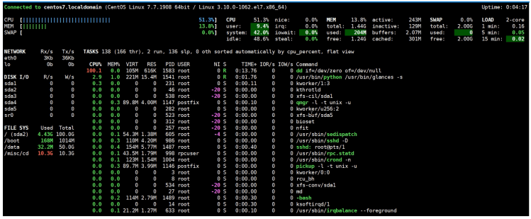
此工具可以通过EPEL源安装,CentOS 8 目前已提供,但测试有问题
格式：
1 glances [-bdehmnrsvyz1] [-B bind] [-c server] [-C conffile] [-p port] [-P password] [--password] [-t refresh] [-f file] [-o output]
内建命令：
1 2 3 4 5 6 7 8 9 10 a Sort processes automatically l Show/hide logs c Sort processes by CPU% b Bytes or bits for network I/O m Sort processes by MEM% w Delete warning logs p Sort processes by name x Delete warning and critical logs i Sort processes by I/O rate 1 Global CPU or per-CPU stats d Show/hide disk I/O stats h Show/hide this help screen f Show/hide file system stats t View network I/O as combination n Show/hide network stats u View cumulative network I/O s Show/hide sensors stats q Quit (Esc and Ctrl-C also work) y Show/hide hddtemp stats
常用选项：
1 2 3 4 5 6 7 8 -b: 以Byte为单位显示网卡数据速率 -d: 关闭磁盘I/O模块 -f /path/to/somefile: 设定输入文件位置 -o {HTML|CSV}: 输出格式 -m: 禁用mount模块 -n: 禁用网络模块 -t -1: 每个CPU的相关数据单独显示
C/S模式下运行glances命令
注意: 不同版本不兼容
1 2 [root@centos7 ~] Client and server not compatible: Client version: 2.5.1 / Server version: 3.1.4.1
查看进程打开文件 lsof lsof：list open files，查看当前系统文件的工具。在linux环境下，一切皆文件，用户通过文件不仅可以 访问常规数据，还可以访问网络连接和硬件如传输控制协议 (TCP) 和用户数据报协议 (UDP)套接字等， 系统在后台都为该应用程序分配了一个文件描述符
命令选项：
1 2 3 4 5 6 7 8 9 10 11 12 13 -a: 列出打开文件存在的进程 -c<进程名>: 列出指定进程所打开的文件 -g: 列出GID号进程详情 -d<文件号>: 列出占用该文件号的进程 +d<目录>: 列出目录下被打开的文件 +D<目录>: 递归列出目录下被打开的文件 -n<目录>: 列出使用NFS的文件 -i<条件>: 列出符合条件的进程(4、6、协议、:端口、 @ip ) -p<进程号>: 列出指定进程号所打开的文件 -u: 列出UID号进程详情 -h: 显示帮助信息 -v: 显示版本信息。 -n: 不反向解析网络名字
范例：
1 2 3 4 5 6 7 8 9 10 11 12 13 14 15 16 17 18 19 20 21 22 23 24 25 26 27 28 29 30 31 32 33 34 35 36 37 38 39 40 41 42 43 44 45 46 47 48 49 50 51 52 53 54 55 56 57 58 59 60 61 62 63 64 65 66 67 68 69 70 71 72 73 74 75 76 77 78 79 80 81 82 83 84 85 86 87 88 [root@rocky ~] COMMAND PID TID TASKCMD USER FD TYPE DEVICE SIZE/OFF NODE NAME systemd 1 root cwd DIR 253,0 270 128 / systemd 1 root rtd DIR 253,0 270 128 / systemd 1 root txt REG 253,0 98160 134759361 /usr/lib/systemd/systemd systemd 1 root mem REG 253,0 582178 67444125 /etc/selinux/targeted/contexts/files/file_contexts.bin systemd 1 root mem REG 253,0 153600 235792 /usr/lib64/libgpg-error.so.0.32.0 systemd 1 root mem REG 253,0 636848 235837 /usr/lib64/libpcre2-8.so.0.11.0 systemd 1 root mem REG 253,0 102552 235374 /usr/lib64/libz.so.1.2.11 systemd 1 root mem REG 253,0 904712 235571 /usr/lib64/libm.so.6 systemd 1 root mem REG 253,0 1714256 275093 /usr/lib64/libp11-kit.so.0.3.1 [root@rocky ~] COMMAND PID USER FD TYPE DEVICE SIZE/OFF NODE NAME rsyslogd 922 root 5w REG 253,0 1498617 201447914 /var/log/messages lsof `tty ` [root@rocky ~] COMMAND PID USER FD TYPE DEVICE SIZE/OFF NODE NAME bash 1326 root 0u CHR 136,3 0t0 6 /dev/pts/3 bash 1326 root 1u CHR 136,3 0t0 6 /dev/pts/3 bash 1326 root 2u CHR 136,3 0t0 6 /dev/pts/3 bash 1326 root 255u CHR 136,3 0t0 6 /dev/pts/3 lsof 3652 root 0u CHR 136,3 0t0 6 /dev/pts/3 lsof 3652 root 1u CHR 136,3 0t0 6 /dev/pts/3 lsof 3652 root 2u CHR 136,3 0t0 6 /dev/pts/3 lsof -p 9527 [root@rocky ~] COMMAND PID USER FD TYPE DEVICE SIZE/OFF NODE NAME bc 3762 root cwd DIR 253,0 4096 201326726 /root bc 3762 root rtd DIR 253,0 270 128 / bc 3762 root txt REG 253,0 91384 201329604 /usr/bin/bc bc 3762 root mem REG 253,0 2387008 235568 /usr/lib64/libc.so.6 bc 3762 root mem REG 253,0 26988 67237467 /usr/lib64/gconv/gconv-modules.cache bc 3762 root mem REG 253,0 346132 67237371 /usr/lib/locale/C.utf8/LC_CTYPE bc 3762 root mem REG 253,0 195080 235366 /usr/lib64/libtinfo.so.6.2 bc 3762 root mem REG 253,0 358168 235756 /usr/lib64/libreadline.so.8.1 bc 3762 root mem REG 253,0 844720 235564 /usr/lib64/ld-linux-x86-64.so.2 bc 3762 root 0u CHR 136,2 0t0 5 /dev/pts/2 bc 3762 root 1u CHR 136,2 0t0 5 /dev/pts/2 bc 3762 root 2u CHR 136,2 0t0 5 /dev/pts/2 lsof -c httpd [root@rocky ~] COMMAND PID USER FD TYPE DEVICE SIZE/OFF NODE NAME bc 3762 root cwd DIR 253,0 4096 201326726 /root bc 3762 root rtd DIR 253,0 270 128 / bc 3762 root txt REG 253,0 91384 201329604 /usr/bin/bc bc 3762 root mem REG 253,0 2387008 235568 /usr/lib64/libc.so.6 bc 3762 root mem REG 253,0 26988 67237467 /usr/lib64/gconv/gconv-modules.cache bc 3762 root mem REG 253,0 346132 67237371 /usr/lib/locale/C.utf8/LC_CTYPE bc 3762 root mem REG 253,0 195080 235366 /usr/lib64/libtinfo.so.6.2 bc 3762 root mem REG 253,0 358168 235756 /usr/lib64/libreadline.so.8.1 bc 3762 root mem REG 253,0 844720 235564 /usr/lib64/ld-linux-x86-64.so.2 bc 3762 root 0u CHR 136,2 0t0 5 /dev/pts/2 bc 3762 root 1u CHR 136,2 0t0 5 /dev/pts/2 bc 3762 root 2u CHR 136,2 0t0 5 /dev/pts/2 lsof -u root | more lsof +D /var/log/ lsof +d /var/log/ lsof -i –n lsof -i@127.0.0.1 lsof -i :80 -n lsof -i –n -a -p 9527 lsof -n -P -i TCP -s TCP:ESTABLISHED
范例：利用 lsof 恢复正在使用中的误删除的文件
1 2 3 4 5 lsof |grep /var/log/messages rm -f /var/log/messageslsof |grep /var/log/messages cat /proc/653/fd/6cat /proc/653/fd/6 > /var/log/messages
CentOS 8 新特性 cockpit 由cockpit包提供,当前Ubuntu和CentOS7也支持此工具
Cockpit 是CentOS 8 取入的新特性，是一个基于 Web 界面的应用，它提供了对系统的图形化管理
监控系统活动（CPU、内存、磁盘 IO 和网络流量）
查看系统日志条目
查看磁盘分区的容量
查看网络活动（发送和接收）
查看用户帐户
检查系统服务的状态
提取已安装应用的信息
查看和安装可用更新（如果以 root 身份登录）并在需要时重新启动系统
打开并使用终端窗口
范例：安装 cockpit
1 2 3 4 [root@centos8 ~] [root@centos8 ~] Created symlink /etc/systemd/system/sockets.target.wants/cockpit.socket → /usr/lib/systemd/system/cockpit.socket.
打开浏览器，访问以下地址：
1 https://<cockpit主机>:9090
信号发送 kill kill：内部命令，可用来向进程发送控制信号，以实现对进程管理,每个信号对应一个数字，信号名称以 SIG开头（可省略），不区分大小写
显示当前系统可用信号：
查看帮助：man 7 signal
常用信号：
1 2 3 4 5 6 7 1) SIGHUP 无须关闭进程而让其重读配置文件 2) SIGINT 中止正在运行的进程；相当于Ctrl+c 3) SIGQUIT 相当于ctrl+\ 9) SIGKILL 强制杀死正在运行的进程,可能会导致数据丢失,慎用! 15) SIGTERM 终止正在运行的进程，默认信号 18) SIGCONT 继续运行 19) SIGSTOP 后台休眠
指定信号的方法 :
信号的数字标识：1, 2, 9
信号完整名称：SIGHUP，sighup
信号的简写名称：HUP，hup
向进程发送信号：
按PID：
1 kill [-s sigspec | -n signum | -sigspec] pid | jobspec ... or kill -l [sigspec]
范例：
1 2 3 4 5 6 kill -1 pidkill -n 9 pidkill -s SIGINT pid[root@centos8 ~] [root@centos8 ~]
按名称：killall 来自于psmisc包
按模式：
常用选项
1 2 3 4 5 6 7 -SIGNAL -u uid: effective user，生效者 -U uid: real user，真正发起运行命令者 -t terminal: 与指定终端相关的进程 -l: 显示进程名（pgrep可用） -a: 显示完整格式的进程名（pgrep可用） -P pid: 显示指定进程的子进程
范例：查看HUP信号
1 2 3 4 5 6 7 8 9 10 11 12 13 14 [root@centos6 ~] reload echo -n $"Reloading $prog : " if ! LANG=$HTTPD_LANG $httpd $OPTIONS -t >&/dev/null; then RETVAL=6 echo $"not reloading due to configuration syntax error" failure $"not reloading $httpd due to configuration syntax error" else LSB=1 killproc -p ${pidfile} $httpd -HUP RETVAL=$? if [ $RETVAL -eq 7 ]; then
范例：利用 0 信号实现进程的健康性检查
1 2 3 4 5 6 7 8 9 10 11 12 13 14 15 [root@centos8 ~] If signal is 0, then no actual signal is sent, but error checking is still performed. [root@centos8 ~] [root@centos8 ~] 0 [root@centos8 ~] ping: no process found [root@centos8 ~] 1
范例: pkill和pgrep支持正则表达式
1 2 3 4 5 6 [root@centos8 ~] [root@centos8 ~] 9278 pickup -l -t unix -u 9281 ping 1.1.1.1 9311 ping 2.2.2.2
范例: 关掉指定端口的进程
范例: nginx服务的信号
1 2 3 4 5 6 7 8 9 10 11 12 13 14 15 16 17 18 19 20 21 [root@centos8 ~] SIGUSR1 Reopen log files. SIGUSR2 Upgrade the nginx executable on the fly. SIGWINCH Shut down worker processes gracefully. [root@wang-liyun-pc ~] /apps/nginx/logs/*.log { daily rotate 100 missingok notifempty nocompress delaycompress create 644 nginx nginx postrotate if [ -f /apps/nginx/logs/nginx.pid ]; then kill -USR1 `cat /apps/nginx/logs/nginx.pid` fi endscript }
作业管理 Linux的作业控制
前台作业：通过终端启动，且启动后一直占据终端
后台作业：可通过终端启动，但启动后即转入后台运行（释放终端）
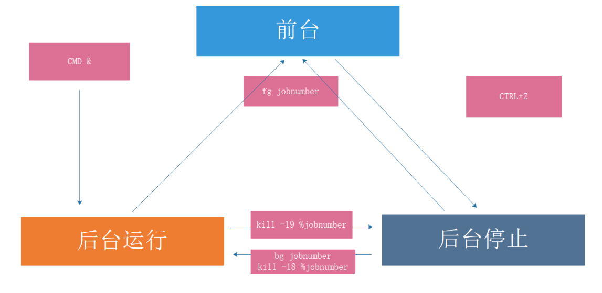
让作业运行于后台
运行中的作业： Ctrl+z
尚未启动的作业： COMMAND &
后台作业虽然被送往后台运行，但其依然与终端相关；退出终端，将关闭后台作业。如果希望送往后台后，剥离与终端的关系
nohup COMMAND &>/dev/null &
screen;COMMAND
tmux；COMMAND
查看当前终端所有作业：
作业控制：
1 2 3 fg [[%]JOB_NUM]：把指定的后台作业调回前台 bg [[%]JOB_NUM]：让送往后台的作业在后台继续运行 kill [%JOB_NUM]： 终止指定的作业
范例: 后台运行的进程和终端关系
1 2 3 4 5 6 7 8 9 10 11 12 [root@centos8 ~] [1] 30545 [root@centos8 ~] root 30545 0.0 0.2 32408 2416 pts/0 S 12:25 0:00 ping127.0.0.1 root 30547 0.0 0.1 12108 988 pts/2 S+ 12:25 0:00 grep --color=auto ping [root@centos8 ~] root 30552 0.0 0.1 12108 1084 pts/2 S+ 12:25 0:00 grep --color=auto ping
范例: nohup
1 2 3 4 5 6 7 8 9 10 11 12 13 14 15 16 17 18 19 20 21 22 23 24 [root@centos8 ~] coreutils-8.30-6.el8_1.1.x86_64 [root@centos8 ~] nohup : ignoring input and appending output to 'nohup.out' [root@centos8 ~] 64 bytes from 127.0.0.1: icmp_seq=16 ttl=64 time=0.037 ms 64 bytes from 127.0.0.1: icmp_seq=17 ttl=64 time=0.040 ms 64 bytes from 127.0.0.1: icmp_seq=18 ttl=64 time=0.042 ms 64 bytes from 127.0.0.1: icmp_seq=19 ttl=64 time=0.047 ms [root@centos8 ~] [1] 9640 [root@centos8 ~] root 9642 0.0 0.1 12108 992 pts/0 S+ 10:28 0:00 grep --color=auto nohup [root@centos8 ~] |-sshd(753)-+-sshd(9415)---sshd(9417)---bash(9446)---ping(9640) [root@centos8 ~] |-ping(9640)
并行运行 利用后台执行，实现并行功能，即同时运行多个进程，提高效率
方法1
1 2 3 4 cat all.sh f1.sh& f2.sh& f3.sh&
方法2
1 (f1.sh&);(f2.sh&);(f3.sh&)
方法3
范例：多组命令实现并行
范例:
1 2 3 4 5 6 7 8 9 10 11 12 13 14 15 16 17 18 19 20 21 22 [root@centos8 ~] NET=10.0.0 for i in {1..254};do { ping -c1 -W1 ${NET} .${i} &> /dev/null && echo ${NET} .${i} is up || echo ${NET} .${i} is down; }& done wait [root@centos8 ~] net=10.0.0 for i in {1..254};do { if ping -c1 -W1 $net .$i &> /dev/null;then echo $net .$i is up else echo $net .$i is down fi }& done wait
任务计划 通过任务计划，可以让系统自动的按时间或周期性任务执行任务
注意: 学习本节需要实现邮件通知,学习内容前必须安装并启动邮件服务
范例: 环境准备
1 2 [root@centos8 ~] [root@centos8 ~]
未来的某时间点执行一次任务
at 指定时间点，执行一次性任务
batch 系统自行选择空闲时间去执行此处指定的任务
周期性运行某任务
一次性任务 at 工具
由包 at 提供
依赖与atd服务,需要启动才能实现at任务
at队列存放在/var/spool/at目录中,ubuntu存放在/var/spool/cron/atjobs目录下
执行任务时PATH变量的值和当前定义任务的用户身份一致
at 命令：
常用选项：
1 2 3 4 5 6 7 -V -t time -l -d N -c N -f file -m
注意：
作业执行命令的结果中的标准输出和错误以执行任务的用户身份发邮件通知给 root
默认CentOS 8 最小化安装没有安装邮件服务,需要自行安装
TIME：定义出什么时候进行 at 这项任务的时间
1 2 3 HH:MM [YYYY-mm-dd] noon, midnight, teatime（4pm）,tomorrow now+
范例：at 时间格式
1 2 3 4 5 6 7 8 9 10 11 12 13 14 HH:MM 在今日的 HH:MM 进行，若该时刻已过，则明天此时执行任务 02:00 HH:MM YYYY-MM-DD 规定在某年某月的某一天的特殊时刻进行该项任务 02:00 2016-09-20 HH:MM[am|pm] [Month] [Date] 06pm March 17 17:20 tomorrow HH:MM[am|pm] + number [minutes|hours|days|weeks]， 在某个时间点再加几个时间后才进行该项任务 now + 5 min 02pm + 3 days
at 任务执行方式：
/etc/at.{allow,deny} 控制用户是否能执行at任务
白名单：/etc/at.allow 默认不存在，只有该文件中的用户才能执行at命令
黑名单：/etc/at.deny 默认存在，拒绝该文件中用户执行at命令，而没有在at.deny 文件中的使用者则可执行
如果两个文件都不存在，只有 root 可以执行 at 命令
1 2 3 4 [root@rocky ~] warning: commands will be executed using /bin/sh at> touch 123 at> <EOT>
范例: ubuntu at任务存放路径
1 2 3 4 5 6 7 8 9 10 11 12 13 14 [root@ubuntu2004 ~] total 20 drwxr-xr-x 5 root root 4096 Apr 23 2020 ./ drwxr-xr-x 5 root root 4096 Dec 12 17:42 ../ drwxrwx--T 2 daemon daemon 4096 Dec 12 17:47 atjobs/ drwxrwx--T 2 daemon daemon 4096 Dec 12 17:47 atspool/ drwx-wx--T 2 root crontab 4096 Feb 14 2020 crontabs/ [root@ubuntu2004 ~] total 16 drwxrwx--T 2 daemon daemon 4096 Dec 12 17:47 ./ drwxr-xr-x 5 root root 4096 Apr 23 2020 ../ -rwx------ 1 root daemon 2875 Dec 12 17:36 a000010198e058* -rw------- 1 daemon daemon 6 Dec 12 17:46 .SEQ
周期性任务计划 cron 周期性任务计划cron相关的程序包：
cronie：主程序包，提供crond守护进程及相关辅助工具
crontabs：包含CentOS提供系统维护任务
cronie-anacron：cronie的补充程序，用于监控cronie任务执行状况，如:cronie中的任务在过去该运行的时间点未能正常运行，则anacron会随后启动一次此任务
cron 依赖于crond服务，确保crond守护处于运行状态：
1 2 3 4 5 systemctl status crond service crond status
cron任务分为
系统cron任务：系统维护作业，/etc/crontab 主配置文件， /etc/cron.d/ 子配置文件
用户cron任务：红帽系统保存在 /var/spool/cron/USERNAME,Ubuntu 系统存放在/var/spool/cron/crontabs/USERNAME，利用 crontab 命令管理
计划任务日志：/var/log/cron
系统cron计划任务 /etc/crontab 格式说明，详情参见 man 5 crontab
注释行以 # 开头
1 2 3 4 5 6 7 8 9 10 11 12 13 [root@centos8 ~] SHELL=/bin/bash PATH=/sbin:/bin:/usr/sbin:/usr/bin MAILTO=root
计划任务时间表示法：
1 2 3 4 5 6 7 8 9 10 11 12 13 14 15 16 17 18 19 (1) 特定值 给定时间点有效取值范围内的值 (2) * 给定时间点上有效取值范围内的所有值,表示“每...”,放在星期的位置表示不确定 (3) 离散取值 (4) 连续取值 (5) 在指定时间范围上，定义步长 / (6) 特定关健字 @yearly 0 0 1 1 * @annually 0 0 1 1 * @monthly 0 0 1 * * @weekly 0 0 * * 0 @daily 0 0 * * * @hourly 0 * * * * @reboot Run once after reboot
范例:
1 2 [root@centos8 ~] For example, "0-23/2" can be used in the 'hours' field to specify command execution for every other hour (the alternative in the V7 standard is "0,2,4,6,8,10,12,14,16,18,20,22" )
范例：每个月日期和星期几字段的关系
1 2 3 [root@centos8 ~]#man 5 crontab Note : The day of a command's execution can be specified in the following two fields — 'day of month', and 'day of week'. If both fields are restricted (i.e., do not contain the "*" character), the command will be run when either field matches the current time. For example, "30 4 1,15 * 5" would cause a command to be run at 4:30 am on the 1st and 15th of each month, plus every Friday.
范例：
1 2 3 4 5 10 21 * * * wang /bin/echo "Howdy!" 0 */3 * * * wang /bin/echo "howdy" ; wall "welcome to Magedu!"
crond任务相关文件:
1 2 3 4 5 6 /etc/crontab 配置文件 /etc/cron.d/ 配置文件 /etc/cron.hourly/ 脚本 /etc/cron.daily/ 脚本 /etc/cron.weekly/ 脚本 /etc/cron.monthly/ 脚本
用户计划任务 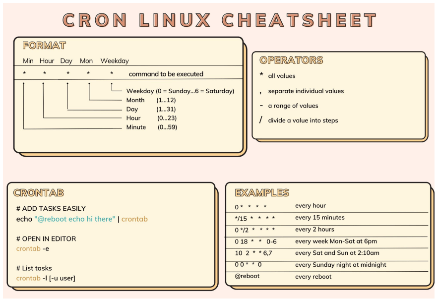
crontab命令:
每个用户都有专用的cron任务文件：/var/spool/cron/USERNAME
默认标准输出和错误会被发邮件给对应的用户,如：wang创建的任务就发送至wang的邮箱
root能够修改其它用户的作业
用户的cron 中默认 PATH=/usr/bin:/bin,如果使用其它路径,在任务文件的第一行加PATH=/path或者加入到计划任务执行的脚本中
第六个字段指定要运行的命令。 该行的整个命令部分，直至换行符或“％”字符，指定的shell执行. 除非使用反斜杠（\）进行转义，否则该命令中的“％”字符将变为换行符，并且第一个％之后的所有数据将作为标准输入发送到该命令。
crontab命令格式：
1 crontab [-u user] [-l | -r | -e] [-i]
常用选项：
控制用户执行计划任务：
范例：修改默认的cron的文本编辑工具
1 2 3 4 5 6 7 8 9 10 11 12 13 root@ubuntu1804:~ no crontab for root - using an empty one Select an editor. To change later, run 'select-editor' . 1. /bin/nano <---- easiest 2. /usr/bin/vim.basic 3. /usr/bin/vim.tiny 4. /bin/ed Choose 1-4 [1]: root@ubuntu1804:~ export EDITOR=vim
范例：PATH变量
1 2 3 4 5 6 7 8 9 10 11 12 13 14 15 [root@centos8 ~] PATH=/usr/local/sbin:/usr/local/bin:/usr/sbin:/usr/bin:/root/bin * * * * * useradd hehe;echo $PATH [root@centos8 ~] * * * * * /data/test.sh [root@centos8 ~] PATH=/usr/local/sbin:/usr/local/bin:/usr/sbin:/usr/bin:/root/bin useradd hehe echo $PATH
范例:
1 2 3 [root@rocky8 ~] [root@rocky8 ~] @reboot echo reboot
范例：
1 2 3 4 5 6 7 8 9 [root@centos8 ~] WARNING=10 df | sed -En '/^\/dev\/sd/s@^([^ ]+).* ([0-9]+)%.*@\1 \2@p' | while read DEVICE USE;do [ $USE -gt $WARNING ] && echo "$DEVICE will be full,USE:$USE " | mail -s diskfull root done [root@centos8 ~] */10 * * * * check_disk.sh
范例:
1 2 3 4 5 6 [root@centos8 ~] df | awk -F ' +|%' '/^\/dev\/sd/{if($5 > 10){system("echo "$1" will be full,use:" $5 "| mail -s warning root@wangxiaochun.com")} }' [root@centos8 ~] */10 * * * * /root/check_disk.sh
范例:
1 2 3 4 5 6 7 8 9 10 11 12 [root@centos8 ~] WARNING=2 df | awk -F ' +|%' '/^\/dev\/sd/{print $1,$5}' |while read DISK USE;do if [ $USE -gt $WARNING ];then echo "$DISK will be full,use:$USE " | mail -s diskwarning root@wangxiaochun.com fi done [root@centos8 ~] */10 * * * * /root/check_disk2.sh
面试题：11月每天的6-12点之间每隔2小时执行/app/bin/test.sh
1 2 3 4 5 6 7 [root@centos8 ~] 0 6-12/2 * 11 * /app/bin/test.sh 0 5-12/2 * 11 * /app/bin/test.sh
注意：运行结果的标准输出和错误以邮件通知给相关用户
1 2 (1) COMMAND > /dev/null (2) COMMAND &> /dev/null
cron任务中不建议使用%，它有特殊用途，它表示换行的特殊意义，且第一个%后的所有字符串会被将成当作命令的标准输入,如果在命令中要使用%，则需要用 \ 转义
注意：将%放置于单引号中是不支持的
范例： 在crontab中%的用法
1 2 30 2 * * * /bin/cp -a /etc/ /data/etc`date +\%F_\%T` 30 2 * * * /bin/cp -a /etc/ /data/etc`date +‘%F_%T’` 有问题
范例: 在crontab中%的用法
1 2 3 4 5 6 7 8 9 10 11 12 13 14 15 16 17 18 19 20 21 22 23 24 25 [root@centos8 ~] * * * * * mail -s "test" wang%wang,%%how are you?% [root@centos8 ~] From root@centos8.localdomain Sat Jul 4 23:58:01 2020 Return-Path: <root@centos8.localdomain> X-Original-To: wang Delivered-To: wang@centos8.localdomain Received: by centos8.localdomain (Postfix, from userid 0) id 0B03860272; Sat, 4 Jul 2020 23:58:01 +0800 (CST) Date: Sat, 04 Jul 2020 23:58:01 +0800 To: wang@centos8.localdomain Subject: test User-Agent: Heirloom mailx 12.5 7/5/10 MIME-Version: 1.0 Content-Type: text/plain; charset=us-ascii Content-Transfer-Encoding: 7bit Message-Id: <20200704155801.0B03860272@centos8.localdomain> From: root@centos8.localdomain (root) wang, how are you? [root@centos8 ~]
思考：
(1) 如何在秒级别运行任务？
1 for min in 0 1 2; do echo "hi" ; sleep 20; done
(2) 如何实现每7分钟运行一次任务?
sleep命令：
1 2 3 4 5 6 7 8 sleep NUMBER[SUFFIX]...SUFFIX: s: 秒, 默认 m: 分 h: 小时 d: 天
范例:
1 2 3 [root@centos8 ~] warning: usleep is deprecated, and will be removed in near future! warning: use "sleep 1e-06" instead...
范例：
1 2 3 4 5 6 7 8 9 10 11 12 13 14 15 16 17 18 [root@centos8 ~] warning: usleep is deprecated, and will be removed in near future! warning: use "sleep 1" instead... real 0m1.001s user 0m0.001s sys 0m0.000s You have new mail in /var/spool/mail/root [root@centos8 ~] all.sh anaconda-ks2.cfg at.txt scanhost.sh real 0m0.004s user 0m0.001s sys 0m0.003s [root@centos8 ~] real 0m0.202s user 0m0.001s sys 0m0.000s